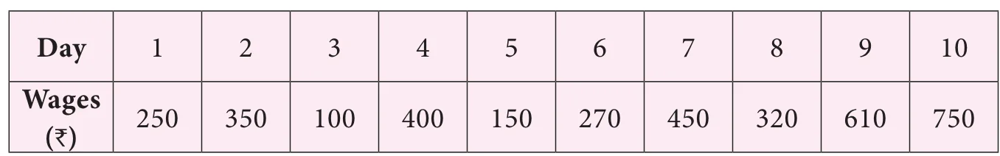
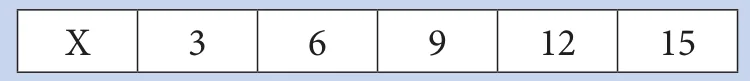

Now, let us see one of the measures of central tendency, that is the Arithmetic Mean. Consider this situation.
Mani and Ravi started collecting shells in the sea shore with an agreement to share the shells equally after collection. Finally, Mani collected 50 shells and Ravi collected 30 shells. Now, if both of them share equally, find the number of shells each one gets?
We find it using arithmetic mean or average. To find the average, add the numbers and divide by 2. Hence,
\(\text{Average} = \dfrac{50+30}{2} = \dfrac{80}{2} = 40\)
Average lies between 30 and 50.
Hence, each of them will get 40.
Try these
Find the Arithmetic Mean or average of the following data.
- The study time spent by Kathir in a week is 3 hrs, 4 hrs, 5 hrs, 3 hrs, 4 hrs, 3:45 hrs and 4:15 hrs.
- The marks scored by Muhil in five subjects are 75, 91, 48, 63 and 51.
- Money spent on vegetables for five days is ₹ 120, ₹ 80, ₹ 75, ₹ 95 and ₹ 86.
Thus to find the arithmetic mean (average), we have to add all the observations and divide the sum of all observations by the number of observations.
Hence, \(\text{Arithmetic Mean} = \dfrac{\text{Sum of all observations}}{\text{Number of observations}}\).
Example 5.1 The daily wages of a worker for 10 days is as follows. Find the average income of the worker.

Solution
\(\text{Arithmetic Mean} = \dfrac{\text{Sum of all observations}}{\text{Number of observations}}\)
\(= \dfrac{250+350+100+400+150+270+450+320+610+750}{10}\)
\(= \dfrac{3650}{10} = 365\)
Hence, the average income of the worker is ₹365.
Example 5.2 The mean of 9 observations is 24. Find the sum of the 9 observations.
Solution
\(\text{Arithmetic Mean} = \dfrac{\text{Sum of all observations}}{\text{Number of observations}}\)
\(\text{Thus, } 24 = \dfrac{\text{Sum of all observations}}{9}\)
\(\text{Sum of all observations} = 9 \times 24 = 216.\)
Example 5.3 The mean age of 15 teachers in a school is 42. The ages of the teachers are 35, 42, 48, \(x\), \(x+8\), 40, 43, 50, 46, 50, 37, 32, 38, 41, 40 (in years). Find the value of X and unknown ages of the two teachers?
Solution
\(\text{Mean} = \dfrac{\text{Total ages of teachers}}{\text{Number of teachers}}\)
\(42 = \dfrac{35+42+48+x+(x+8)+40+43+50+46+50+37+32+38+41+40}{15}\)
\(\dfrac{550+2x}{15} = 42\)
\(550+2x = 42 \times 15\)
\(= 630\)
\(2x = 630-550\)
\(2x = 80\)
\(x = \dfrac{80}{2}\)
\(x = 40\)
Therefore, the age of the teacher (\(x\)) is 40 and the age of the another teacher (\(x+8\)) is \(40+8=48\).
Example 5.4 If the mean of the following numbers is 38, find the value of \(x\).
48, \(x\), 37, 38, 36, 27, 35, 34, 38, 49, 33.
Solution
\(\text{Mean} = \dfrac{\text{Sum of all observations}}{\text{Number of observations}}\)
\(38 = \dfrac{48+x+37+38+36+27+35+34+38+49+33}{11}\)
\(38 = \dfrac{375+x}{11}\)
\(38 \times 11 = 375+x\)
\(418 = 375+x\)
\(x = 418 - 375\)
\(x = 43\)
Hence, the value of \(x\) is 43.
Think
Check the properties of arithmetic mean for the example given below:

- If the mean is increased by 2, then what happens to the individual observations.
- If first two items are increased by 3 and last two items are reduced by 3, then what will be the new mean?
Do You Know?
Here are few interesting averages.
- On an average, you blink your eyes 17 times per minute. That is 5.2 million times a year.
- The average person has about 1460 dreams a year. That is about 4 per night.
- Based on the average life of a G2 star the present age of the sun is estimated to be 4.5 billion years, halfway through its lifetime.